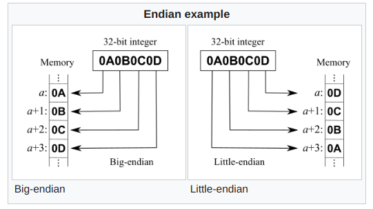
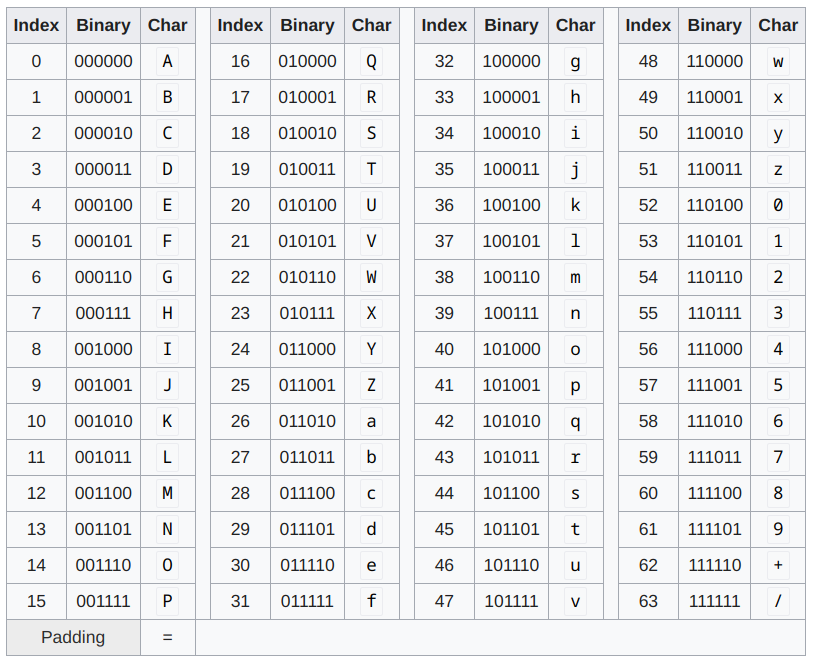
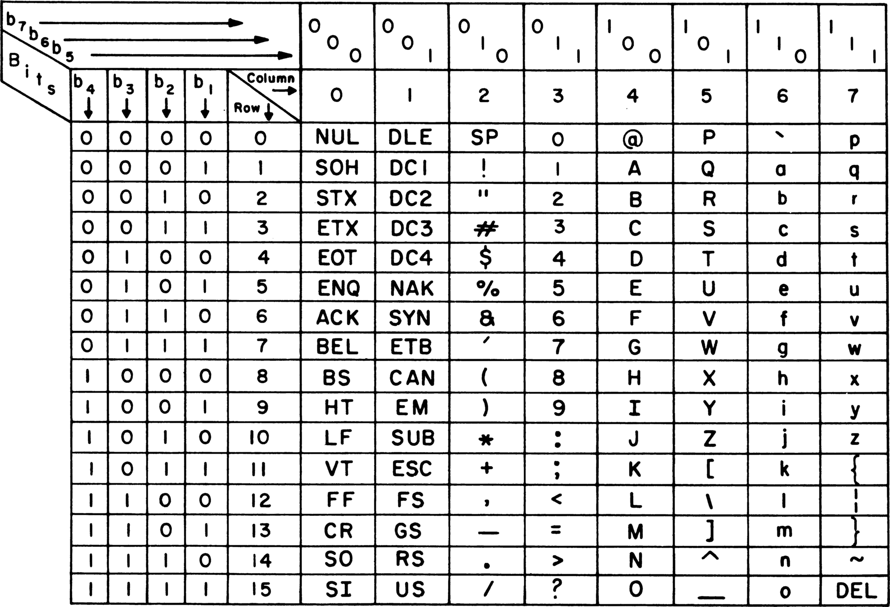
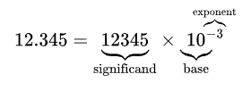
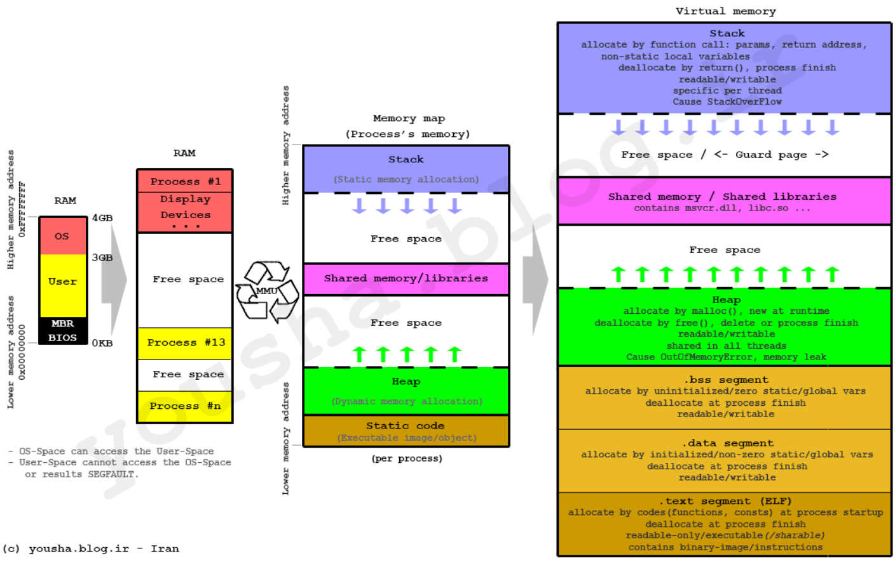

C Programming
BME554L - Spring 2026
Binary Data
Why Base2?
- Binary states:
HIGHandLOW LOWis commonlyGNDHIGHis commonly either 5, 3.3 or 1.8 V.- Why binary? Electronics really can only represent
OnandOffstates at the lowest level in hardware.
Binary (Base2) Numbers
base10(decimal): 0-9 in summed powers of 10.base2(binary): 0, 1 in summed powers of 2.- Convert binary to decimal: \(a_n2^n + a_{n-1}2^{n-1}+\dots+a_12^1+a_02^0\), where \(a_n\) is the \(n^{th}\) bit in the binary number:
- For example, for the binary number 0b101 (where ‘0b’ means the number is represented in binary), the first 1 (from left to right) is in the 2nd bit spot, the 0 is in the 1st bit spot, and the second 1 is in the 0th bit spot.
- Using the above formula results in \(1*2^2 + 0*2^1 + 1*2^0 = 4 + 0 + 1 = 5\)
Common Binary Number Word Lengths
Word: Number of bits to use to express a value
| Bit Depth | Name | Example |
|---|---|---|
| 1 | Bit | 0 |
| 4 | Nibble | 1001 |
| 8 | Byte | 10011011 |
“Standard” word length can be system architecture dependent (16-, 32- or 64-bits)
Endianness
The bits–or bytes–of a word can be organized from most significant to least significant or vice versa; this order is referred to as endianness.

Data Encoding
Raw binary data (bits) can quickly become cumbersome to read and write. To make data more human readable, we can encode it into a more compact form.
Hexadecimal (Base16)
base16(hexadecimal): 0-9, A-F in summed powers of 16 (0-15).- A single character represents a nibble.
- Hex is indicated by a leading
0xor16subscript: 22546 =0x5812=581216
Base64

Text Encoding
ASCII

UTF-8
https://en.wikipedia.org/wiki/UTF-8
Data Types (C)
| Name | Bit Depth | Value Range |
|---|---|---|
| bool | 1 or 8 | true/false (1/0) |
| byte | 8 | 0-255 (unsigned) |
| char | 8 | -128-127 (signed) |
| int | 16 | -32768-32767 (signed) |
| uint | 16 | 0-65535 (unsigned) |
| long | 32 | -2147483648-2147483647 (signed) |
| float | 32 | 1.2E-38–3.4E38 (signed) |
| double | 64 | 2.3E-308-1.7E308 (signed) |
How are floating point numbers represented?


Declaring Variables by Data Type (C)
- Matlab, by default, declares variables when first used, and defaults all numerical data to be
double(64-bit floating point).
- Python infers data type based on the value assigned to the variable.
- In C, we must explicitly declare the data type of a variable, and the data type cannot change over the life of the variable.
Why not just make all numbers floats/doubles?
The nRF52833 only has 128 kB of RAM. If we can use smaller data types, we can store more data in memory.
int16_t my_int = 5; // 16-bit signed integer
uint16_t my_uint = 5; // 16-bit unsigned integer
float my_float = 5.0; // 32-bit floating pointVariable Scope
Variables can be limited in their scope (where they are accessible).
- Global variables are defined outside of functions and are globally available to everything in your program.
- Local variables are defined inside of functions and are only visible within that function.
#include <zephyr/kernel.h>
int my_global_variable; // global variable
void my_function(int my_input) {
int my_local_variable; // local variable
// do something
}Constants (const)
- Variables that have values that will not change can be declared as constants (
const). - Constant variables consume a fixed amount of memory based on their data type when they are declared and defined.
MACROS
- MACROS are preprocessor directives that are replaced with their values (constants of function definitions) before the code is compiled.
- MACROS save memory compared to using constant variables and can improve readability.
- Defined with the
#definedirective after#includepreprocessor directives and are typically typed inALLCAPS. - VS Code will color highlight MACROs differently than variables.
#include <zephyr/kernel.h>
#define MY_MACRO 1
void my_function(int my_input) {
// do something
int a = MY_MACRO * my_input;
}Static Variables
Static variables have different properties depending on whether they are local or global. Static variables get their own memory space that is not shared with other variables that are more dynamically allocated.
Global
- Globally-defined static variables are limited in scope to the
*.cfile they are defined in. - Protects against name collisions (linkage) across multiple source code files.
Local
- Static variables defined in functions retain their value between function calls (exit and re-entry).
#include <zephyr/kernel.h>
void my_function(int my_input) {
static int my_static_variable = 0; // static local variable
my_static_variable += my_input;
printk("The value of my_static_variable is %d\n", my_static_variable);
}Typecasting
- Use different data types in mathematical operations can lead to unexpected results.
Watch out for integer math (fixed point) that will yield a non-integer (floating point) result.
void main(void) {
int a = 5;
int b = 3;
float c;
c = a / b; // c = 1.0
}- Typecasting is performed by placing the desired data type in parentheses before the value or variable.
- Once a typecasted variable is encountered in the expression (by order of operations), then the rest of the operation is performed in that typecast unless typecasted again.
int a = 5;
int b = 3;
float c;
c = (float)a / b; // b is typecasted to float
// because a is typecasted to floatBit Depth
Watch out for the range of your data type! If your mathematical operation exceeds the min/max value of the bit depth, the data will “wrap around”.
uint8_t a = 255; // 8-bit unsigned integer
a = a + 1; // a = 0Printing / Logging Data Types
| Formatted Print Placeholder | Data Type |
|---|---|
%d |
decimal (int) |
%ld |
long decimal (32-bit) |
%lld |
long long decimal (64-bit) |
%u |
unsigned decimal (uint) |
%f |
float |
%c |
char |
%s |
string (char array) |
%x |
hex (int) |
%b |
binary (int) |
%p |
pointer (memory address) |
printk("The value of a is %d\n", a); // %d must match the data type of a to properly print its valuePointers
One of the greatest strengths–and most dangerous aspects–of C is the use of pointers. A pointer is a variable that stores the memory address of another variable. Pointers are used to pass variables by reference (in contrast to value) to functions, and to dynamically allocate memory.
Pointers save memory and time by not copying the value of a variable to a function. Instead, the function can directly access the variable in memory. This is especially useful for large data structures.
int a = 5;
void my_function(int *a_ptr) { // *a_ptr is a pointer to int a
*a_ptr = 10; // dereference a_ptr to change the value of a
// note no value is returned; it is assigned directly to the memory address
}
void main() {
printk("The value of a is %d\n", a); // prints 5
my_function(&a); // pass the memory address (&) of a to my_function
printk("The value of a is %d\n", a); // prints 10
}General C Code Structure
- Organization of C code is very important! Developers will “expect” certain things to be in certain places.
- C code is compiled (built) into a binary executable that is loaded onto the microcontroller. It is not “run” on-the-fly as an interpreted language like Matlab or Python.
#include <zephyr/kernel.h> // include system libraries
#include "my_great_library.h" // include your own libraries
#define MY_MACRO 1 // define MACROs
void my_function(int32_t my_input); // function prototype
int32_t my_global_variable; // global variable
void my_function(int32_t my_input) { // function definition
// do something
// no return b/c of void return type
}Coding Style
- All lines of code must end with a semicolon
;.
- Indentation helps with readability, but does nothing to delineate code blocks.
- Code blocks are delineated by curly braces
{}.
Functions
Return Types/Codes
- Most C functions will return a value, but that value tends to be an exit code, not a value being assigned to a variable.
- These codes are used to indicate the success or failure of the function, and tend to be ints.
- Returned
0indicates success, and any other value indicates failure. - The return type is defined in the function prototype.
- If the function does not return a value, the return type is
void.
int my_function(void) {
// do something
return 0; // return 0 for success
}
void main(void) {
int return_code = my_function();
if (return_code) {
printk("Failure!\n");
} else {
printk("Success!\n");
}
}Function Arguments
- Function arguments are defined in the function prototype.
- Most of our arguments will be passed by reference (pointers to memory addresses), not value. This means that the function will be able to change the value of the variable passed to it by pointer reference.
- If the function does not take any arguments, the argument list is
void. The function may still operate on variables if they are global.
main
- In Zephyr, the primary source code file is
src/main.c. - In Zephyr (and many other C frameworks), the
main()function is the entry point of the program.
Fun Data Structures
Arrays
- Arrays are a contiguous block of memory that can store multiple values of the same data type.
- Arrays are declared with a fixed length.
- Arrays are indexed starting at
0(not1!). - Arrays can be declared with an initial value, or initialized later.
int my_array[5] = {1, 2, 3, 4, 5};int my_array[5] = {0};int my_array[5];
- The only time to populate all of the elements of an array is when it is initialized. Otherwise, you can:
- Populate each element individually (e.g., a
forloop), or - Create a new array and then copy it over the existing array using
memcpy().
- Populate each element individually (e.g., a
Enumerations (Enums)
- Enums are a way to assign a name to a value.
- Enums are declared with a fixed length.
- Enums are indexed starting at
0(not1!). - Very useful for more verbose / readable
switch/casestatements.
enum Level {
LOW, // by default, 0
MEDIUM, // 1
HIGH // 2
};
void main(void) {
enum Level my_level = MEDIUM;
switch (my_level) {
case LOW:
printk("Low level\n");
break; // break out of switch statement
case MEDIUM:
printk("Medium level\n");
break;
case HIGH:
printk("High level\n");
break;
default:
printk("Unknown level\n");
break;
}
}Structs
- Structures group multiple variables together.
- Structures are declared with a fixed length.
- Nice data structure to organize variables that are related to each other.
struct Person {
char name[50];
int age;
float height;
};
void main(void) {
struct Person my_person = {"John", 32, 1.8};
printk("My name is %s\n", my_person.name);
printk("I am %d years old\n", my_person.age);
printk("I am %f meters tall\n", my_person.height);
}Flow Control
Conditional Statements
if (a == 5) {
// do something
} else if (b != 3) {
// do something else
} else {
// do something else
}Loops
for (int i = 0; i < 10; i++) {
// do something
}
while (a < 10) {
// do something
a++;
}
while () {
// do something
if (a == 10) {
break; // break out of loop
}
}Project Libraries
- Writing your own libraries is a great way to organize your code and make it more readable.
- Libraries can also be shared with others and re-used in other projects.
#include "your_library.h"can be used to include a library in your source code.- A library contains a pair of files:
your_library.hcontains the function prototypes and macro definitions.your_library.ccontains the function definitions.
- To make sure that a library doesn’t get included multiple times, use the following syntax in your header file:
#ifndef YOUR_LIBRARY_H
#define YOUR_LIBRARY_H
// function prototypes and macro definitions
#endif- The definition of the macro
YOUR_LIBRARY_His tested for, and it is defined, then it has already been included into the code. - In your library source code (
your_library.c), you need to include this header file:
#include "your_library.h"CMake Build System
- Zephyr uses
cmakeas its build system, which helps link libraries used in your source code. - You will also need to add the library to your
CMakeLists.txtfile:
target_sources(app PRIVATE src/main.c src/your_library.c)Memory Management

A great summary of the different types of memory in C is summarized below from http://www.gotw.ca/gotw/009.htm:
const Data
- Immutable data that are read-only; trying to modify it is undefined.
- Store data whose values are known at compile time and guarded against inadvertent modification.
- All data in this area are available during the entire lifetime of the program.
- Optimized memory usage since multiple references to the same
constdata can share the same memory location.
Stack
- Stores automatic variables.
- Typically allocation is much faster than for dynamic storage (heap or free store) because a memory allocation involves only pointer increment rather than more complex management.
- Objects are constructed immediately after memory is allocated and destroyed immediately before memory is deallocated, so there is no opportunity for programmers to directly manipulate allocated but uninitialized stack space (barring willful tampering using explicit dtors and placement new).
Free Store
- The free store is one of the two dynamic memory areas, allocated/freed by new/delete.
Heap
- The other dynamic memory area, allocated/freed by
malloc()/free()and their variants.
Global/Static
- Global or static variables and objects have their storage allocated at program startup, but may not be initialized until after the program has begun executing.